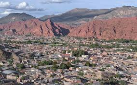
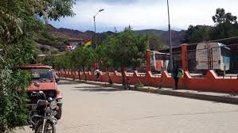
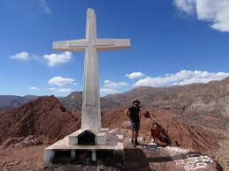

Bienvenidos a una travesía por los mitos y leyendas que forman la esencia de Tupiza.
Bienvenido a mi página web.
Aquí encontrarás un recorrido fascinante por los mitos, relatos, historias y tradiciones de Tupiza, una tierra rica en cultura, leyendas y paisajes únicos. Este espacio ha sido creado con el propósito de preservar y compartir el legado oral y visual de nuestro pueblo, rescatando las voces del pasado que aún resuenan en cada rincón de nuestra tierra. Ya seas visitante, curioso o parte de nuestra comunidad, te invito a explorar cada sección, disfrutar de las imágenes, leer los relatos populares y participar activamente dejando tus comentarios y conocimientos. Gracias por ser parte de este viaje cultural por el corazón de Tupiza.
Mitos de Tupiza
LA SOMBRA DEL COLEGIO ANDRÉS DE SANTA CRUZ
Antes que se construyera el colegio Andrés de Santa Cruz, era un cementerio con un ambiente pesado y prefirieron retirar ese cementerio y construir un colegio en esta obra los Padres de Familia ayudaron a construir este colegio y así con la ayuda lograron acabar más rápido la construcción.
VER MASDONDE EL DIABLO PERDIÓ EL PONCHO
Lorenzo, era un típico paisano Chicheño, agricultor como todos, o minero algunas veces, tenía la prestancia que le daba el sombrero alón de Chichas y las abarcas inseparables de esos pies curtidos por las largas caminatas. Precisamente volvía de Suipacha, el vallecito aledaño a Tupiza, donde vivía su bella novia Primitiva, más conocida como “Primi”.
VER MASEl Duende del Colegio Suipacha
El portero del Colegio Nacional Suipacha de Tupiza, encargado de la limpieza, ordenamiento de pupitres y mesas de aulas; era una rutina que se cumplía al finalizar el día.
VER MASEl Viejo Molle
Las parejas que tienen una tradición que muy pocos la conocen en Tupiza de hoy; si nos remontamos más o menos a dos centurias del pasado, debemos decir que en ese lugar existía mucho lodo y nuestros abuelos cuidando del buen castellano que usaban, denominaron al lugar como “El Lamedal”, de donde deriva la palabra “La Lameda”.
VER MAS
El espíritu protector de los Cerros Colorados
La Montaña Colorada es un emblemático paisaje natural ubicado cerca de Tupiza conocido por su asombrosa variedad de tonalidades rojizas. Sin embargo, detrás de su impresionante apariencia se encuentra una leyenda fascinante sobre el espíritu protector que habita en sus tierras.
VER MAS
El Peñasco de Tambillo Bajo
A los extremos del anchuroso Río Tupiza, que corre con gran presión de norte a sur, exactamente a los cinco kilómetros de Tupiza, se extienden los campos de sembradío de los pobladores de Tambillo Bajo en medio de un paisaje maravilloso que agrada a los visitantes. En ese panorama lleno de verdor, pasa la línea del ferrocarril (antes Villa Atocha) y todos los días corren los trenes como boas pesadas, pujando y sacudiendo la tierra.
VER MASHistoria de Tupiza
Antes de seguir hablando de leyendas o mitos hablaremos de Tupiza la Joya bella de Bolivia y todo empieza entre 1535 y enero de 1536, tuvo la presencia de españoles, que lo usaron como base de aprovisionamiento para la expedición de Diego de Almagro a Chile.[3] No se sabe si la población fue creada o fundada por el propio Almagro o por su adelantado Juan de Saavedra, jefe de una partida exploratoria, de ser cierta esta creencia, Tupiza sería junto con Paria (fundada en las mismas circunstancias) la ciudad española más antigua de Bolivia, y la segunda más antigua no fundada por los españoles. Esto se refrendaría en la existencia de registros notariales que nombran a españoles como vecinos de Tupiza ya en 1539, el mismo año de la fundación de Chuquisaca. En 1542 Tupiza y el resto de la región pasó a formar parte del Virreinato del Perú. En otra versión se presumía que Tupiza fue fundada el 4 de junio de 1574 por Luis de Fuentes y Vargas, quien se encaminaba por el valle a establecer la Villa de Tarija,[4] aunque esto sería desmentido debido a documentos de fechas anteriores a la mencionada, donde se menciona a un pueblo con el nombre de Tupiza, Topeza, Topisa o Tupica.[5] Desde 1776, la actual región de Sud Chichas y el este de Sud Lípez formaban parte del Virreinato del Río de la Plata. El 7 de noviembre de 1810, a 25 km al sur de la ciudad, se libró la Batalla de Suipacha en la localidad homónima, en la cual participaron los ejércitos patriotas remitidos por la Primera Junta de Buenos Aires, bajo el mando del general Balcarce, el vocal Juan José Castelli, el mayor Díaz Vélez y del caudillo chicheño coronel Pedro Arraya. En territorio de los Chichas se consiguió el primer triunfo de las armas patriotas por la independencia del Alto Perú, hoy Bolivia, gracias a la participación de platenses, cinteños, tarijeños y, sobre todo, de la decisiva participación de los centauros chicheños. En mérito a esta gloriosa batalla, la Junta de Buenos Aires dispuso que los combatientes llevaran un distintivo con la inscripción: "LA PATRIA A LOS VENCEDORES DE TUPIZA".
VER MASLeyendas
El Féretro de Gran Chocaya
A manera de introducción conviene aclarar que Gran Chocaya, se encuentra ubicada a 3 kilómetros de Animas (nombre que proviene de almas del purgatorio), que fue asiento minero de gran importancia que a la larga perteneció al Cuarto grupo de la COMIBOL. Como nadie ignora, con la llegada de los españoles se construyeron iglesias para adorar a Dios, de esa manera edificaron en aquel lugar una iglesia y lo dotaron de un féretro para trasladar a los muertos al camposanto.
VER MASEl Diablo se Enamoró
Érase una vez, hace muchos años cuando ya había sido creado nuestro pueblito encantado Tupiza, donde nace la valentía del poncho rojo, donde nacen las mujeres hermosas y encantadoras. Tierra majestuosa creada por nuestros antepasados habitada por personas aguerridas. Pero aunque no lo crean los habitantes tenían muchos problemas. Una tarde se encontraba Marcelina una jovenzuela morena, con ojos redondos y negros como la uva, su cabello largo y crespo que parecían las ondas del río de Tupiza tan hermosa y deslumbrante mujer que las mismas flores envidiaban su belleza
VER MASEl Carretón de la Otra Vida
Es una vieja tradición, contada noche tras noche por los papas y abuelos, se dice que ocurría su aparición una vez al mes. Al acercarse la media noche, el Carretón surgía por la antigua calle del Cementerio, hoy Chuquisaca, lentamente el carretón avanzaba por las principales calles, los ejes crujían entremezclándose con el ruido de las ruedas al rodar sobre las piedras. Era un carretón sin barandas, rústico, tirado por bueyes oscuros que avanzaban en señal de portar una carga pesada. La creencia popular era que se trataba de una aparición fantasmagórica, los ojos de los animales y del conductor, chispeaban, brillaban amenazantes, por lo que jamás nadie se atrevió a cruzarse en el camino del Carretón de la otra vida.
VER MASReseñas y Comentarios
Galería de Imágenes


